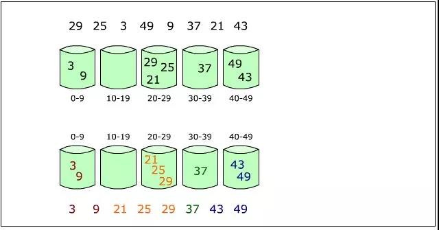

原文连接:https://www.cnblogs.com/lemonyam/p/10832680.html
计数排序：
1、一个非基于比较的排序算法，该算法于1954年由 Harold H. Seward 提出，它的优势在于在对一定范围内的整数排序，
其时间复杂度为Ο(n+k)（其中k是整数的范围），快于任何比较排序算法
2、步骤：
a、找出给定整数序列的最大值 max 和最小值 min，创建大小为 max-min+1 的辅助空间，其值为 0
b、最小的那个数下标为 0，最大数下标为 -1，其他数 num 的下标为 num-min
c、根据遍历所找到的数，在其相应下标处的值加一
d、遍历辅助空间，输出对应下标的数，其输出次数为下标处的值，即若辅助空间 temp[0] == 5，则输出下标 0 对应的数 5 次
注：该算法是以空间换时间，若待排序列不是整数，则最好不要使用，因为浮点数范围比较大，即使像在 [0, 1) 这个区间也可以有极多个


#include <iostream> #include <vector> #include <algorithm> void countSort(std::vector<int>& nums); int main() { std::vector<int> nums; int len = 0; std::cout<<"请输入长度："; do { std::cin>>len; if (len <= 0) std::cerr<<"请输入正整数："; } while (len <= 0); int num = 0; std::cout<<"输入 "<<len<<" 个数: "; for (size_t i = 0; i < len; ++i) { std::cin>>num; nums.push_back(num); } std::cout<<"排序后的数组："; countSort(nums); system("pause"); return 0; } void countSort(std::vector<int>& nums) { // 注意要使用 '*' 号，因为它们找到的都是位置，这两个函数都包含在 algorithm 里面 int max = *max_element(nums.begin(), nums.end()); int min = *min_element(nums.begin(), nums.end()); int size = max - min + 1; // 创建辅助空间，初始化为 0 std::vector<int> temp(size, 0); // 将对应下标的数出现次数加一 for (auto num : nums) temp[num-min] += 1; for (int i = 0; i < size; ++i) { int count = temp[i]; // 根据次数输出，我们在这里没有改变原序列的顺序， // 仅仅输出排序后的序列，若要改变原序列，需要执行复制操作 while (count > 0) { std::cout<<i+min<<std::ends; count--; } } std::cout<<std::endl; }
基数排序：
1、基数排序是根据待排序列的元素的位来进行排序的，是一种非比较排序；它可以分为两类：
最低位优先法，简称 LSD 法：先从最低位开始排序，再对次低位排序，直到对最高位排序后得到一个有序序列
最高位优先法，简称 MSD 法：先从最高位开始排序，再逐个对各分组按次高位进行子排序，循环直到最低位
以下是 LSD 的动态演示图
2、步骤（LSD）：
a、根据待排序的元素的最多位数确定循环次数，如最多位的数位 12345，则循环 5 次
b、创建 10 张空表，分别表示 0~9
c、从最低位开始，根据位上的数值选择放入的表，如 123 在最低位上的数为 3，则放到下标为 3 的表里
d、按顺序将表里的元素取出，替换原序列的数
e、向高移动一位，重复操作 c 和 d，直至循环次数

#include <iostream> #include <vector> #include <cmath> #include <algorithm> #include <cstdlib> int get_times(int num); int get_digit(int num, int d); void radixSort(std::vector<int>& nums); int main() { std::vector<int> nums; int len = 0; std::cout<<"请输入长度："; do { std::cin>>len; if (len <= 0) std::cerr<<"请输入正整数："; } while (len <= 0); int num = 0; std::cout<<"输入 "<<len<<" 个数: "; for (size_t i = 0; i < len; ++i) { std::cin>>num; nums.push_back(num); } radixSort(nums); std::cout<<"排序后的数组："; for (int num : nums) std::cout<<num<<std::ends; std::cout<<std::endl; system("pause"); return 0; } // 获取第 d 位的数值 int get_digit(int num, int d) { return int(num / pow(10, d)) % 10; } // 获取需要循环的次数 int get_times(int num) { int times = 0; while (num) { times++; num /= 10; } return times; } //没有考虑负数的情况，如果需要的话可以使用两个数组，一个存放正数，一个存放负数 void radixSort(std::vector<int>& nums) { int max = *max_element(nums.begin(), nums.end()); int times = get_times(max); int len = nums.size(); for (size_t i = 0; i < times; ++i) { std::vector<std::vector<int>> temp(10); for (int num : nums) { temp[get_digit(num, i)].push_back(num); } // 清除数组内容 nums.clear(); // 赋值 for (auto vec : temp) { for (int num : vec) { nums.push_back(num); } } } return ; }
桶排序：
1、扫描选出待排序列的最大 max 和最小值 min，设有 k 个桶，则我们把区间 [min, max] 均匀地划分为 k 个区间，
每个区间就是一个桶，然后再将待排序列地元素分配到各自的桶里，即数值的大小在哪个区间就分配到哪
2、对每个桶里的元素进行排序，可以选择任意一种算法
3、将各个桶里的元素合并成一个大的有序序列

#include <iostream> #include <vector> #include <cstdlib> #include <algorithm> void bucketSort(std::vector<int>& num); int main() { std::vector<int> nums; int len = 0; std::cout<<"请输入长度："; do { std::cin>>len; if (len <= 0) std::cerr<<"请输入正整数："; } while (len <= 0); int num = 0; std::cout<<"输入 "<<len<<" 个数: "; for (size_t i = 0; i < len; ++i) { std::cin>>num; nums.push_back(num); } std::cout<<"排序后的数组："; bucketSort(nums); system("pause"); return 0; } //这个排序我没有改变原序列的顺序，仅仅只是输出有序序列，若要改变原序列，请添加赋值操作 void bucketSort(std::vector<int>& nums) { // 寻找最大最小值 int max = *max_element(nums.begin(), nums.end()); int min = *min_element(nums.begin(), nums.end()); // 为方便起见，桶个数直接采用范围大小 int buckets_num = max-min+1; std::vector<std::vector<int>> res(buckets_num); for (int num : nums) { // 按数压入 res[num-min].push_back(num); } for (auto vec : res) { // 桶内排序 sort(vec.begin(), vec.end()); } for (auto vec : res) for (int num : vec) std::cout<<num<<std::ends; std::cout<<std::endl; return ; }